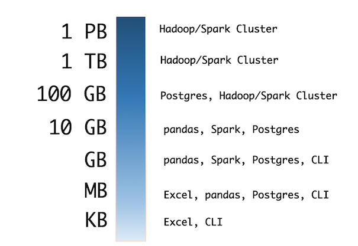

Replace Hadoop with Your Laptop
üêçMultiprocessingüêç
Vicki Boykis | @vboykis

About me
Data Science + Engineering @ CapTechGitHub: veekaybee
Website: vickiboykis.com
Agenda
- Your computer is good enough
- You don't always have big data
- Multiprocessing makes it faster
- When you need distributed systems
"There is a time for every data environment"
-The Byrds, Probably

To everything (turn turn)
There is a season (turn turn)
And a time to every purpose
A time to laugh
A time to cry
A time for distributed systems
A time for local processing
A time for healing
My local environment

Boss: "Please analyze Les MapReduces for me"
Les Miserables - 655k words / 3.2 MB textfile
You don't always have big data
How much data can your laptop process?
- Databricks Tungsten: "Aggregation and joins on one billion records on one machine in less than 1 second." (2013 Macbook Pro)
- Command Line: 1.75GB containing around 2 million chess games. "This
find | xargs mawk | mawkpipeline gets us down to a runtime of about 12 seconds, or about 270MB/sec, which is around 235 times faster than the Hadoop implementation."
Checking out the file
vboykis$ head -n 1000 lesmiserables.txt
On the other hand, this affair afforded great delight to Madame Magloire. "Good," said she to Mademoiselle Baptistine; "Monseigneur began with other people, but he has had to wind up with himself, after all. He has regulated all his charities. Now here are three thousand francs for us! At last!"
That same evening the Bishop wrote out and handed to his sister a memorandum conceived in the following terms:--
Command line MapReduce
sed -e 's/[^[:alpha:]]/ /g' lesmiserables.txt \ # only alpha
| tr '\n' " " \ # replace lines with spaces
| tr -s " " \ # compresses adjacent spaces
| tr " " '\n' \ # spaces to linebreaks
| tr 'A-Z' 'a-z' \ # removes uppercase
| sort \ # sorts words alphabetically
| uniq -c \ # counts unique occurrences
| sort -nr \ # sorts in numeric order reverse
| nl \ # line numbers
46 1374 marius
47 1366 when
48 1316 we
49 1252 their
50 1238 jean
Let's say we have lots of files
# Makes n number of copies of Les Miserables
INPUT=lesmiserables.txt
for num in $(seq 1 1000)
do
bn=$(basename $INPUT .txt)
cp $INPUT $bn$num.txt
done
#Before
vboykis$ du -sh
3.3M
#After
vboykis$ du -sh
3.2G
We should write some Python now
mapreduce.py
mapreduce.py-
get_filenamesRead in all text files -
get_dataDo text processing (strip/split) -
map_functionCount occurrences of words in each file -
reduce_functionSums up occurrences across files -
show_itemsSorts results in descending order
The heart of map/reduce
def map(filename):
"""
Takes a list of sentences,splits,
and sums up words per sentence
:param filename: a single filename
"""
result = {}
for i in words:
try:
result[i] += 1
except KeyError:
result[i] = 1
return result
def reduce_function(dict_list):
"""
This function reduces a list of dicts by
:param dict_list: List of words
"""
d = {}
for d in dict_list:
for k, v in d.items():
try:
reduced_dict[k] += v
except KeyError:
reduced_dict[k] = v
return d
 GitHub
GitHub
The heart of map/reduce
map: {'valjean': 5, 'marius': 2, 'javert': 3}
{'valjean': 4, 'marius': 1, 'javert': 4}
reduce: {'valjean': 9, 'marius':3, 'javert': 7}
How long does it take?
3 GB = 5 minutes
word_list = []
files = get_filenames()
for filename in files:
mapr = map_function(filename)
word_list.append(mapr)
mr = reduce_function(word_list)
show_items(mr)
vboykis$ time python mapreduce.py
Size of files: 3.099123327061534 GB
Processing textfiles...
[1]+ Stopped python mapreduce.py
real 5m14.605s
How do we speed it up?
üéâ Multiprocessing!üéâ
(and üêçPyPyüêç)
(and üêçPyPyüêç)
What are threads and processes?
(And what's a GIL?)
How Python Utilizes Hardware
vboykis$ python mapreduce.py
vboykis$ top
PID COMMAND %CPU TIME #TH STATE
32057 Python 99.0 00:04.16 1/1 running
Multiprocessing API
Process: Each function call is a separate process (good for small programs)
Pool: Allows you to control number of processes, maintains order of returned results

Our Multiprocessing Code
p.map(func, iterable[, chunksize])
# parallel equivalent of map function
# iterable is split into pieces of approx that size
# submitted to process pool as separate tasks
files = get_filenames()
pool= Pool(processes=5)
result_set = pool.map(map_function, files, chunksize=30)
show_items(reduce_function(result_set))
PID COMMAND %CPU TIME #TH
32984 Python 94.4 01:16.48 1/1
32983 Python 94.8 01:14.76 1/1
32982 Python 77.4 01:17.70 1/1
32981 Python 95.2 01:15.60 1/1
32980 Python 96.9 01:14.00 1/1
GitHub
Our Multiprocessing Code
3 GB = 3 minutes
pool= Pool(processes=5)
result_set = pool.map(map_function, get_filenames(), chunksize=30)
vboykis$ time mapreduce.py
('Size of files:', 3.099123327061534, 'GB')
real 2m56.571s user 11m54.280s 0m29.430s
'valjean' - 790790
'marius' - 909909
'jean' - 1143142
Speeding it up with PyPy
"If you want your code to run faster, you should probably just use PyPy.” — Guido" Good for longer processes, mostly Python codebases.
vboykis$ time pypy mapreduce.py
real 2m10.799s user 6m28.577s sys 0m42.156s
('Size of files:', 3.099123327061534, 'GB')
vboykis$ time pypy mapreduce.py
('Size of files:', 6.195150626823306, 'GB')
real 4m23.917suser 12m6.691ssys 1m39.279s
Recap
- You can process fairly large amounts of data(5-10 GB) locally
- Structure your code for multiprocessing
- Try different Pool/Chunksize combinations
- PyPy!
The cost of a system
 In some cases, an optimized single node is better than unoptimized multiple nodes.
In some cases, an optimized single node is better than unoptimized multiple nodes. Source
MapReduce with Spark locally:
less code, more overhead

mbp-vboykis$ ./bin/spark-submit --master local[5]/spark_wc.py
MapReduce with Spark
sc = SparkContext("local", "Les Mis Word Count")
logFile = "/lesmiserables*.txt"
wordcounts = sc.textFile(logFile).map( lambda x: x.replace(',',' ').replace('.',' ').replace('-',' ').lower()) \
.flatMap(lambda x: x.split()) \
.map(lambda x: (x, 1)) \
.reduceByKey(lambda x,y:x+y) \
.map(lambda x:(x[1],x[0])) \
.sortByKey(False)
print(wordcounts.take(10)) #print first 10 results
sc.stop()
GitHub
What big data can't give you

- Data integrity
- (denormalized, naming conventions)
- SQL Query analyst speed
- Traditional database guarantees (consistency)
What big data can give you
- Storage of unstructured data
- Fault tolerance and availability
- A centralized place across departments
- Extremely heavy parallelized usage
- Ability to programmatically work with data
Good use cases for Hadoop

- A lot of data (more than 1 TB and growing)
- Unstructured data (images, video, metadata)
- Streaming data that needs to be stored quickly (logs)
- Many researchers need access in parallel
- You need to access and analyze ALL THE DATA
- You have a dedicated team of people to work on it (@ least 1-2 dev, 1 admin, 1 analyst)
Thanks!/ Resources
Vicki Boykis | @vboykis- Links:
- Don't use Hadoop - your data isn't that big
- An introduction to distributed systems
- Multithreading and Python
Icons: made by Freepik
from www.flaticon.com
are licensed by CC 3.0